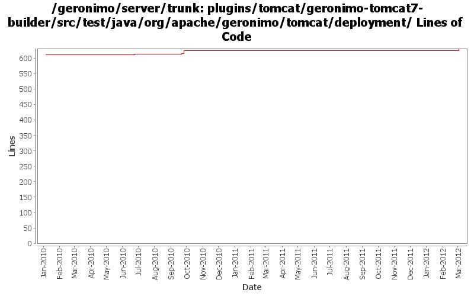

[root]/plugins/tomcat/geronimo-tomcat7-builder/src/test/java/org/apache/geronimo/tomcat/deployment

| Author | Changes | Lines of Code | Lines per Change |
|---|---|---|---|
| Totals | 14 (100.0%) | 25 (100.0%) | 1.7 |
| xuhaihong | 6 (42.9%) | 17 (68.0%) | 2.8 |
| djencks | 8 (57.1%) | 8 (32.0%) | 1.0 |
GERONIMO-6292 Share the japser servlet between jasper plugin and web-container plugin.
7 lines of code changed in 1 file:
GERONIMO-6240 Modify configs so that they use features as the bootstrap, and fix a few compile and test errors. Servers build but do not fully start
1 lines of code changed in 1 file:
GERONIMO-5557 Add a similar context element in the schema, currently we could use this elements for most context level attributes configurations and context parameters. (Based on the patch from viola.lu)
10 lines of code changed in 3 files:
GERONIMO-5624 use info tree for tomcat web app deployment
3 lines of code changed in 1 file:
GERONIMO-5190 use openejb-jee jaxb tree for spec dds
2 lines of code changed in 3 files:
GERONIMO-5025, GERONIMO-5117. Make jndi supported directly by Modules and straighten out which contexts are shared when.
0 lines of code changed in 2 files:
GERONIMO-5150 type safe shared data in EARContext
2 lines of code changed in 1 file:
GERONIMO-5008 Create util methods for all the Geronimo components
0 lines of code changed in 2 files: